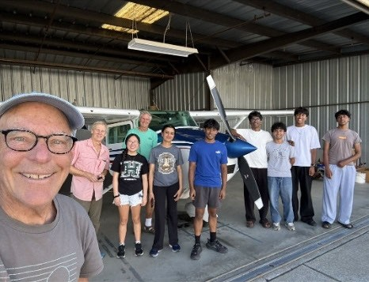

01
Lateral do Grêmio é dúvida e será reavaliado antes de jogo contra o Bahia
GZH · 18/11/2026 · 17:37 (Brasília)Fonte original ↗
 www.em.com.brGustavo Scarpa recebe convite inusitado de tataraneto de Tolstói em Moscou
www.em.com.brGustavo Scarpa recebe convite inusitado de tataraneto de Tolstói em Moscou BBC Middle EastIsraeli military launches rare ground operation in Gaza beyond Yellow LineMeio NewsIsabel Fonteles anuncia foco em idosos e cuidadores durante evento na África do Sul
BBC Middle EastIsraeli military launches rare ground operation in Gaza beyond Yellow LineMeio NewsIsabel Fonteles anuncia foco em idosos e cuidadores durante evento na África do Sul www.gazetadopovo.com.brMilhares vão às ruas no Haiti agradecer Bukele por ofensiva militar contra as ganguesInvestNewsAnthropic pode superar SpaceX e fazer maior IPO da história; veja os númeroswww.msn.comChefe do Pentágono anuncia acordo de cooperação militar com a Venezuelawww.msn.comFrança: Édouard Philippe apresenta agenda conservadora enquanto centro e direita caem nas sondagensAs Nações Unidas no BrasilONU abre credenciamento de imprensa para Cúpula Especial sobre Segurança da Inteligência Artificial
www.gazetadopovo.com.brMilhares vão às ruas no Haiti agradecer Bukele por ofensiva militar contra as ganguesInvestNewsAnthropic pode superar SpaceX e fazer maior IPO da história; veja os númeroswww.msn.comChefe do Pentágono anuncia acordo de cooperação militar com a Venezuelawww.msn.comFrança: Édouard Philippe apresenta agenda conservadora enquanto centro e direita caem nas sondagensAs Nações Unidas no BrasilONU abre credenciamento de imprensa para Cúpula Especial sobre Segurança da Inteligência Artificial www.canalrural.com.brEtiópia recebe primeira remessa de carne bovina brasileiraO POVOPetróleo cai com recuperação de oferta ofuscando retomada de ataques no Oriente MédioNewsweekMap reveals countries declaring emergencies over El Niño
www.canalrural.com.brEtiópia recebe primeira remessa de carne bovina brasileiraO POVOPetróleo cai com recuperação de oferta ofuscando retomada de ataques no Oriente MédioNewsweekMap reveals countries declaring emergencies over El Niño Notícias AgrícolasPutin e Trump devem ter reunião bilateral na cúpula da ApecUOL NotíciasUcrânia diz ter atacado refinarias russas antes de reunião na China
Notícias AgrícolasPutin e Trump devem ter reunião bilateral na cúpula da ApecUOL NotíciasUcrânia diz ter atacado refinarias russas antes de reunião na China O BrasilianistaÁfrica avança no mercado digital enquanto Brasil fica para tDiário do NordesteJornalista André Hernan é diagnosticado com leucemia: 'Batalha silenciosa'Middle East EyeMorning updatewww.bra1.com.brEuropa promete empréstimo de 49,5 bilhões de dólares à Ucrânia, com garantia de reembolso pela RússiaPoder NavalCoreia do Sul lança fragata Pyeongtaek, quinta unidade do programa Ulsan Batch-IIIR7Xi Jinping e Vladimir Putin defendem intensificação dos laçosExtra onlineCachorro de Ana Maria Braga come sandália de Kenya Sade durante entrevista: 'É muito novinha'MashableSpaceX Starship landing livestream: Watch the catch attempt liveAround PragueIce Age Oceans Stored Extra Carbon Because Sea Ice and Currents Worked TogetherR7Hegseth vai a Caracas, e EUA e Venezuela anunciam acordo militarG1Motorista de app arremessa mesa em lanchonete e assusta funcionários em Franca, SPCanaltechNvidia corta envio de chips de IA à China após crise de espionagem e saída de CEOSBT NewsConselho de Paz culpa Israel e Hamas por fracasso em GazaDaily TrustAfrica loses $125bn annually to illicit financial flows – AUوكالة سبأAnsarullah Political Office condemns Israeli military operation & forced displacement orders in central GazaMichael West MediaPopulism, pessimism spooking private industryO LiberalEscolas são esvaziadas na Espanha após ameaça de bombaNotícias AgrícolasComo a Índia se tornou uma potência do arroz, e por que isso está se tornando um problema
O BrasilianistaÁfrica avança no mercado digital enquanto Brasil fica para tDiário do NordesteJornalista André Hernan é diagnosticado com leucemia: 'Batalha silenciosa'Middle East EyeMorning updatewww.bra1.com.brEuropa promete empréstimo de 49,5 bilhões de dólares à Ucrânia, com garantia de reembolso pela RússiaPoder NavalCoreia do Sul lança fragata Pyeongtaek, quinta unidade do programa Ulsan Batch-IIIR7Xi Jinping e Vladimir Putin defendem intensificação dos laçosExtra onlineCachorro de Ana Maria Braga come sandália de Kenya Sade durante entrevista: 'É muito novinha'MashableSpaceX Starship landing livestream: Watch the catch attempt liveAround PragueIce Age Oceans Stored Extra Carbon Because Sea Ice and Currents Worked TogetherR7Hegseth vai a Caracas, e EUA e Venezuela anunciam acordo militarG1Motorista de app arremessa mesa em lanchonete e assusta funcionários em Franca, SPCanaltechNvidia corta envio de chips de IA à China após crise de espionagem e saída de CEOSBT NewsConselho de Paz culpa Israel e Hamas por fracasso em GazaDaily TrustAfrica loses $125bn annually to illicit financial flows – AUوكالة سبأAnsarullah Political Office condemns Israeli military operation & forced displacement orders in central GazaMichael West MediaPopulism, pessimism spooking private industryO LiberalEscolas são esvaziadas na Espanha após ameaça de bombaNotícias AgrícolasComo a Índia se tornou uma potência do arroz, e por que isso está se tornando um problemaMilhares foram às ruas do Haiti agradecer a Bukele pela ofensiva contra as gangues e pedir que as tropas salvadorenhas permaneçam no país.
Desembarque ocorreu no dia 12, meses após a abertura do mercado etíope e a definição do certificado sanitário para o produto.

O governo do Brasil participou, nesta quarta-feira (18) de um encontro na sede da Organização das Nações Unidas para a Alimentação e a Agricultura (FAO), em Roma, na Itália. No encontro, o ministro do Desenvolvimento e Assistência Social, Família e Combate à Fome, Wellington Dias, destacou os avanços do mundo no combate à fome. Notícias relacionadas: Arcebispo de Aparecida pede desarmamento e atenção à fome e à pobreza. Preços mundiais dos alimentos caem pelo 3º mês em novembro, diz FAO . Segundo o ministro, o Brasil derrotou a fome quando houve vontade política. “No Brasil, quando houve vontade política, vencemos a corrida contra a fome não
Uma manifestação marcada para as 17h de quinta-feira (19) vai cobrar justiça pelo professor André Aires, espancado por um grupo de homens no centro do Rio de Janeiro depois de ter impedido e denunciado a agressão de um deles contra uma mulher. O caso ocorreu à luz do dia e no meio da rua, nas proximidades da Praça da Cruz Vermelha. A mulher que era alvo das agressões conseguiu fugir do agressor, mas o professor levou sucessivos golpes, como socos e chutes. Notícias relacionadas: STF derruba imunidade para punir violência patrimonial contra mulheres. Lutador de jiu-jitsu é preso por tentativa de feminicídio no Rio. Policial é preso em Cajamar
O presidente de Nauru não tem oponentes políticos depois que todos os legisladores se juntaram ao lado do governo ABC News - Notícias de última hora, últimas notícias e vídeos
Os Estados Unidos (EUA) entraram em alerta após as sucessivas panes tecnológicas que afetaram serviços críticos do país, desde a aviação civil, passando pelo sistema bancário, até mesmo o sistema de comunicação da Agência Nacional de Segurança (NSA), o órgão responsável pela inteligência do país. Ainda na semana passada, os serviços de comunicação da Microsoft saíram do ar, o que prejudicou serviços também no Brasil. Na última sexta-feira (13), uma pane nos sistemas de controle da Administração Federal de Aviação (FAA) levou ao cancelamento de todos os voos nos EUA . Notícias relacionadas: EUA retomarão voos após falha na rede de tráfego aére
Após dois dias de audiência pública, a Comissão de Assuntos Econômicos (CAE) do Senado aprovou nesta quarta-feira (18) um requerimento para pedir explicações ao Tribunal de Contas da União (TCU) sobre a alíquota de referência de 11,3% da Contribuição sobre Bens e Serviços (CBS) . Os parlamentares querem acesso a estudos, metodologias e atas das reuniões técnicas que fundamentaram a recomendação do TCU para 2027. O pedido, apresentado pelo senador Eduardo Braga (MDB-AM), relator da reforma tributária na Casa, também prevê a solicitação de informações ao Ministério da Fazenda. Notícias relacionadas: Durigan prevê impacto inicial da reforma trib

O diretor-geral da Polícia Federal (PF), Andrei Rodrigues, informou que vai entregar nesta quarta-feira (18) ao presidente do Supremo Tribunal Federal (STF), Edson Fachin, os relatórios que tratam de menções a ministros da Corte encontradas nas investigações relativas ao Banco Master. Rodrigues disse que vai entregar o material à noite, em reunião com Fachin. A afirmação foi feita durante audiência pública na Comissão de Constituição e Justiça (CCJ) do Senado para prestar esclarecimentos sobre a alteração de relatórios da corporação destinados ao STF no caso Master e o afastamento de delegados ligados às investigações. O ministro da Justiça e